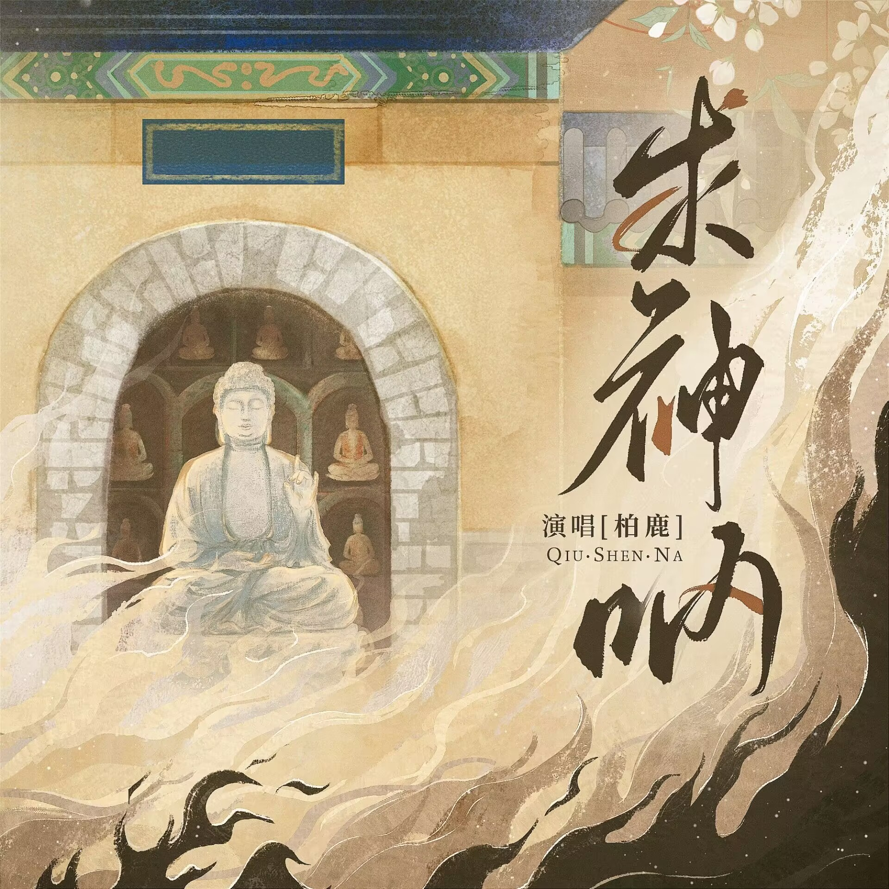

搜索结果

求神呐 - 柏鹿
词 Lyricist by：潇然
曲 Composed by：潇然
编曲 Arranger：张亦钧
吉他 Guitar：张亦钧
制作人 Produced：潇然
和声 Backing vocals：小手鹅_/柏鹿
录音师 Recording Engineer：吴天宇
录音棚 Recording Studio：Leader Music Studio
混音师 Mixing Engineer：王巍MOKA
母带处理 Mastering Engineer：王巍MOKA
监制 Executive producer：靖成@爱粉扑
统筹Project Lead：爱粉扑音乐
企划Planner：枨乐企划